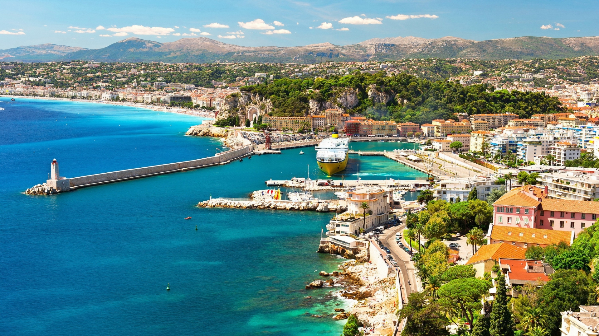

Čedomirovi
paket aranžmani
Customer-friendly putovanja sa smestajem osigurenjem itd
Odaberite svoj paket aranzman!
Bacite oko na nase prelepe aranzmane!
Bec
Beč (nem. Wien, bečki dijalekt Wean, mađ. Bécs, arhaično Vijena od engl. Vienna) je glavni grad i ujedno jedna od saveznih država Austrije. Sa oko 1.910.000 stanovnika Beč je 6. najveći grad Evropske unije, daleko najveći grad Austrije i njeno političko, ekonomsko i kulturno središte.
Istanbul
Istanbul (bizantski grčki εἰς τὴν πόλıν [is tim ˈbolin]: u grad; turski İstanbul [isˈtɑnbuɫ]; arhaično srpskohrvatski i općeslavenski Carigrad, prethodno Konstantinopol ili Konstantinopolj te Stambol), grad smješten na Bosforskom tjesnacu, nekadašnja je prijestolnica triju velikih carstava - rimskog (330.-395.), bizantinskog (395.-1453.) i otomanskog (1453.-1923.). Nakon osnivanja moderne Republike Turske, Ankara je proglašena njenim glavnim gradom.
Moskva
Moskva (rus. Москва) glavni je i najveći grad Rusije i najveći grad u Evropi. Nalazi se na reci Moskvi i obuhvata površinu od 1.097,12 km². Prema popisu iz 2010. u Moskvi je živeo 11.503.501 stanovnik, dok urbano stanovništvo grada čini 1/12 ruske populacije. Prema popisu iz 2015. godine, u gradu je živelo preko 12 miliona stanovnika, dok šire gradsko područje po nekim izvorima i do 15 miliona.
Drezden
Drezden (nem. Dresden, lsrp. Drježdźany) je grad u Nemačkoj saveznoj državi Saksonija. Smešten je u dolini reke Elbe, dvadesetak kilometara od granice sa Češkom. Zbog svog izuzetnog kulturno-istorijskog značaja poznat je pod imenom „Firenca na Elbi“ (nem. Elbflorenz).
Mars
Mars je četvrta planeta po udaljenosti od Sunca i druga najmanja u Sunčevom sistemu, nakon Merkura. Dobila je ime po rimskom bogu rata — Marsu. Takođe se naziva i „Crvenom planetom”, jer na površini preovladava gvožđe(III) oksid koji planeti daje crvenkastu boju.